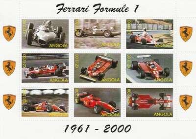
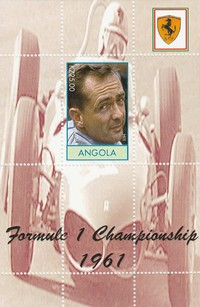
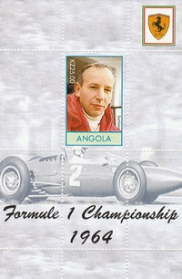
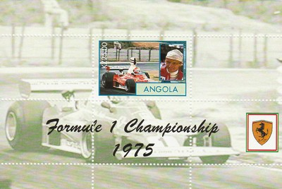
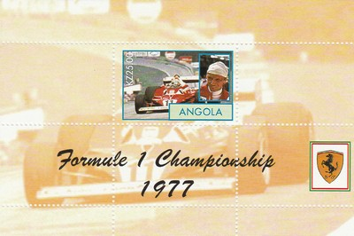
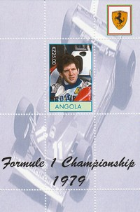
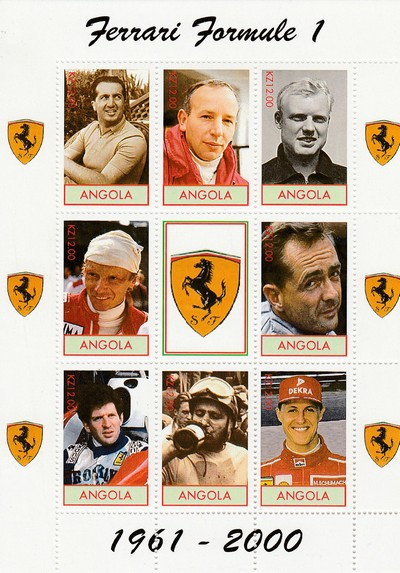
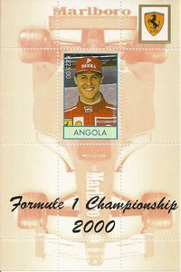

Depicted on Postage Stamps
|
 Issue date: Unknown A mini sheet containing 9 values showing various Ferrari F1 cars from 1961 to 2000. In the 1961 Formula One season, the team kept Phil Hill, Wolfgang von Trips and Richie Ginther, and debuted another Carlo Chiti designed car, the Ferrari 156 based on the Formula 2 car of 1960, which was dominant throughout the season. Ferrari drivers Hill and von Trips competed for the championship. Giancarlo Baghetti joined in midseason and became the first driver to win on his debut race (the 1961 French Grand Prix). However, at the end of the season, von Trips crashed at the 1961 Italian Grand Prix and was killed, together with over a dozen spectators. Hill won the championship. In 2000 Schumacher had a close battle with rival Mika Hakkinen of McLaren but won the championship in the Ferrari F1-2000, winning 9 races out of 17 that year. He was Ferrari's first World Driver's Champion in 21 years, since Jody Scheckter in 1979. Team mate Rubens Barrichello finished fourth in the championship, taking his maiden win at the German Grand Prix at the Hockenheim after Schumacher was taken out in the first corner and Barrichello qualified 18th.  Issue date: 2000 A mini sheet containing one value showing Phil Hill. Hill drove in F1 from 1958 to 1966 and won the drivers title in 1961 with Ferrari.  Issue date: 2000 A mini sheet containing one value showing John Surtees. Surtees drove in F1 from 1960 to 1972 and won the drivers title in 1964 with Ferrari.  Issue date: 2000 A mini sheet containing one value showing Niki Lauda. Lauda drove in F1 from 1971 to 1985; in 1975 he won the drivers title with Ferrari driving the 312T. The 1975 F1 season started slowly for Lauda, but after nothing better than a fifth-place finish in the first four races he then won four out of the next five races in the new Ferrari 312T. His first World Championship was confirmed with a fifth win at the last race of the year, the United States GP. He also became the first and only driver to lap the Nurburgring Nordschleife in under 7 minutes, which was considered a huge feat. And the Nordschleife section of the Nurburgring was 2 miles longer than it is today.  Issue date: 2000 A mini sheet containing one value showing Niki Lauda. Lauda drove in F1 from 1971 to 1985; in 1977 he won the drivers title with Ferrari driving the 312T2. Lauda's previously good relationship with Ferrari was severely affected by his decision to withdraw from the previous season's Japanese Grand Prix (which effectively gave James Hunt the title), and he endured a difficult 1977 season, despite easily winning the championship through consistency rather than outright pace. Having announced his decision to quit Ferrari at season's end, Lauda left early due to the team's decision to run the then unknown Gilles Villeneuve in a third car at the Canadian Grand Prix.  Issue date: 2000 A mini sheet containing one value showing Jody Scheckter. Scheckter drove in F1 from 1972 to 1980; in 1979 he won the drivers title with Ferrari driving the 312T4.  Issue date: 2010 A mini sheet of eight values showing the Ferrari F1 drivers champions up to 2000; the drivers who won the F1 drivers championship in a Ferrari are: 1952, 1953 Alberto Ascari 1956 Juan Manuel Fangio 1958 Mike Hawthorn 1961 Phil Hill 1964 John Surtees 1975, 1977 Niki Lauda 1979 Jody Scheckter 2000 Michael Schumacher  Issue date: 2000 A mini sheet containing one value showing Michael Schumacher. In 2000, Schumacher became Ferrari's first drivers' champion for 21 years. |